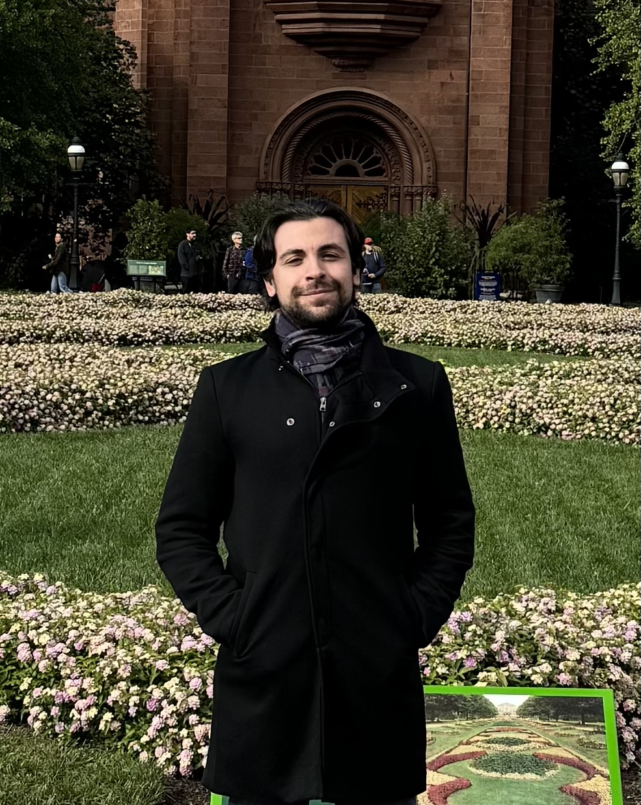

Researcher in blockchain security, social network analysis, and cyber deception. Uncovering the mechanisms behind fraud, manipulation, and misinformation at scale.

Investigating DeFi manipulation, NFT wash trading, sniper bots, meme coin fraud, and smart contract vulnerabilities across Ethereum, BSC, and Solana.
Detecting fake engagement, coordinated inauthentic behavior, and conspiracy monetization on Online Social Networks.
Building honeypot systems, honeywords, and AI-driven deception techniques to defend against IP theft and advanced cyber threats.
Applying machine learning and deep learning to threat detection, fraud identification, and anomaly detection in large-scale online systems.
🏆 Awarded the Seal of Excellence (Score: 95.8/100) by the European Commission for the Marie Curie Global Postdoctoral Fellowships 2025.
📰 Our research on meme coins was featured in Fast Company: "Why so many meme coins fail almost immediately?".
✨ Two new papers accepted! Our analysis of meme coin market manipulation will appear at USENIX Security 2026, and our study on Bitcoin accountability will be presented at ACNS 2026. See you in Baltimore! 🦀
🇩🇰 Started a new position as a PostDoctoral Researcher at the Technical University of Denmark (DTU) in the Cybersecurity Engineering section.
🎤 Presented our paper "TGDataset: Collecting and Exploring the Largest Telegram Channels Dataset" at KDD '25 in Toronto, Canada.
Department of Applied Mathematics and Computer Science, Cybersecurity Engineering Section. Research on honeypots, AI-driven deception, and threat intelligence with Prof. Vasilomanolakis.
Department of Computer Science. Research on blockchain market manipulations, meme coin fraud, and Telegram ecosystem security.
Hosted by Prof. Giuseppe Ateniese. Collaboration on Bitcoin accountability and privacy-preserving protocols.
Advisor: Prof. Alessandro Mei. Cycle XXXVI. Grade: Summa cum Laude.
Grade: Summa cum Laude.
Grade: Summa cum Laude.
European Commission, Marie Curie Postdoctoral Fellowships 2025. Score: 95.8/100
Technical University of Denmark – 16-month research fellowship, Dept. of Cybersecurity
Sapienza University of Rome – Independent research on meme coin market manipulations
Sapienza University of Rome – 1-year fellowship, Dept. of Computer Science
3-year doctoral scholarship at Sapienza University of Rome, cycle XXXVI
Comprehensive replication package for the cross-chain analysis of 34,988 meme coins (Ethereum, BSC, Solana, Base). Includes the full longitudinal dataset, Dune Analytics SQL queries, and Python detection logic.
The largest public dataset of Telegram channels (120k+ channels, 400M+ messages), developed to enable systematic research on deception, misinformation, and fraud. Includes preprocessing scripts.
A curated list of channels involved in conspiracy narratives and monetization schemes. Contains categorization by conspiracy type and metadata like subscriber counts.
Curated collection of regular expressions designed to detect smart contract features that prevent sniper bot attacks (cooldowns, transfer limits, blacklists).
I'm always open to discussing research collaborations, speaking invitations, or exchanging ideas on blockchain security and cyber deception. You can reach me at:
Full Curriculum Vitae below:
📄 Download CV (PDF)